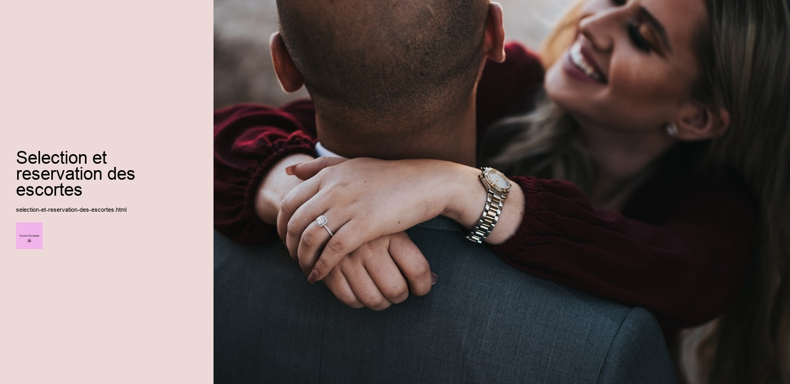

Titre : Sélection et réservation des escortes : Une exploration humaine
Dans le monde moderne, lindustrie des services descorte a gagné en visibilité et en importance, devenant un sujet de discussion tantôt controversé, tantôt banal. Ce phénomène soulève des questions sur les motivations et les critères qui guident la sélection et la réservation des escortes. À travers cet essai, nous explorerons les différents aspects de ce processus, tout en tentant de comprendre les nuances qui le composent.
Tout dabord, il est essentiel de reconnaître que la sélection dune escorte est souvent un acte empreint de subjectivité. Les clients cherchent généralement à répondre à des besoins émotionnels ou sociaux spécifiques, quil sagisse de compagnie, de conversation, ou simplement de présence. La diversité des offres disponibles sur le marché permet aux individus de choisir selon leurs préférences personnelles, quelles soient physiques, intellectuelles ou culturelles. Cette personnalisation du service est au cœur de lexpérience et constitue un élément crucial dans le processus décisionnel.
La réservation, quant à elle, est souvent considérée comme une étape plus pragmatique. Elle implique une planification logistique qui va au-delà de la simple sélection. Les clients doivent prendre en compte des facteurs tels que la disponibilité, le lieu et la durée de lengagement. Dans ce contexte, la communication joue un rôle prépondérant. Les plateformes numériques, devenues incontournables, offrent des outils qui facilitent cet échange, permettant aux deux parties dexprimer clairement leurs attentes et leurs conditions. La transparence est ici la clé pour éviter tout malentendu et garantir une expérience satisfaisante pour tous.
Cependant, il est crucial de ne pas perdre de vue les implications éthiques et légales entourant cette industrie. Dans de nombreux pays, le statut légal des services descorte varie considérablement, ce qui peut compliquer le processus de sélection et de réservation. Les clients, tout comme les prestataires, doivent naviguer dans un cadre légal souvent complexe et parfois ambigu. Cette réalité impose une responsabilité supplémentaire aux plateformes et aux individus impliqués, qui doivent sassurer que leurs pratiques respectent les lois en vigueur.
En outre, au-delà des considérations légales et logistiques, la dimension humaine de cette interaction ne doit pas être sous-estimée. Les escortes, en tant que prestataires de services, apportent souvent un soutien émotionnel et une présence qui peuvent enrichir la vie de leurs clients. Le respect mutuel et la reconnaissance de cette humanité partagée sont essentiels pour que linteraction soit bénéfique et épanouissante pour les deux parties.
En conclusion, la sélection et la réservation des escortes représentent un processus complexe, mêlant subjectivité, pragmatisme, éthique et humanité. Alors que cette industrie continue dévoluer, il est important de maintenir un dialogue ouvert et respectueux sur ces interactions, en reconnaissant leur impact potentiel sur la société et sur les individus qui y participent. Ainsi, en plaçant lhumain au cœur de cette réflexion, nous pouvons espérer encourager des pratiques plus responsables et éthiques.
Services d'escorte en Occitanie